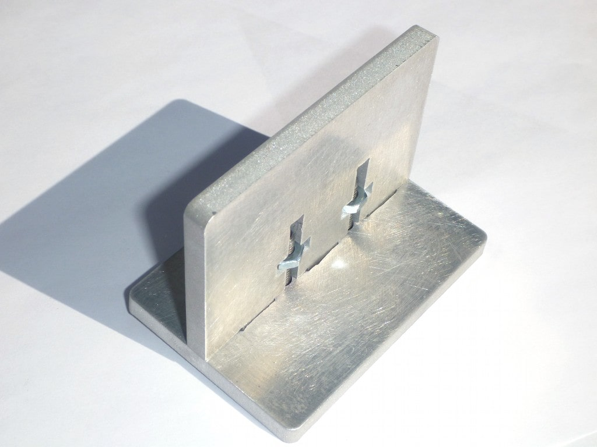

Becreative (Internship)
Problem Statement
To design fixture mechanism for joining of mdf sheets in different planes & develop different 3D geometries that can be prepared using the designed sheet.
Concept
The concept was inspired by the Lego toys. Manufacturer will provide customer with certain quantities and type of shapes according to product. The customer itself can build different geometries from one kit. Parts should also be able to accomodate electronic components like arduino and various sensors.
Defined Material
Medium-density fibreboard (MDF) is to be used as the material.
Why MDF?
1. MDF is generally cheaper than plywood.
2. The surface of MDF is very smooth, and you don’t have to worry about knots on the surface.
3. MDF is very consistent throughout, so cut edges appear smooth and won’t have splinters.
4. The consistency and smoothness of MDF allows for easy cutting of detailed designs (such as scrolled or scalloped designs) using a scroll saw, band saw, or jigsaw.
Approach to the problem
In T-nut technique, a bolt or screw is passed through a round hole on the faces of one laser cut part, and then through a special slot perpendicular to the cut edge of another piece. The bolt is threaded through a nut which is held in place in a perpendicular slot.
The mating edges of both parts are usually cut with tabs and slots to further secure them together. This is similar to the finger joint or comb joint sometimes found in woodworking.
CAD drawing of parts to be joined at their edges with the t-nut technique
Metal pieces joined at the edge with the t-nut technique
The slots are placed in a location which provides more stability
Metals joined in a more stable variation of the t-slot technique
Manufacturing Process
Laser cutting technology is used to carve the mdf sheets.
Two types of parts were designed

1. Base plates (without T slots- act as a base plates for 3D parts)

2. T slot parts (these will accomodate screws and will act as connector)
Preparation of 3D structures using parts.

Results
About 10 carved mdf sheets were designed which can be use interchangeably to create more innovative 3D shapes. 10 sub-projects which includes toys of various material were also designed. (Can't display due to NDA)
- Ferris Wheel
- Robo Arm
- Spirograph
- Man Automata
- Draw Bot
- Gear Toy
- Gripper
- Dog Lamp
- Pulley Car
- Bird Automata